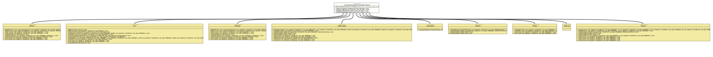

Module org.tquadrat.foundation.svg
Package org.tquadrat.foundation.svg
Interface AllowsConditionalProcessingAttributes
- All Known Subinterfaces:
SVG,SVGClipPath,SVGGroup,SVGLine,SVGPath,SVGRectangle,SVGText,SVGTSpan,SVGUse
- All Known Implementing Classes:
SVGClipPathImpl,SVGElementAdapter,SVGGenericElement,SVGGroupImpl,SVGImpl,SVGLineImpl,SVGPathImpl,SVGRectangleImpl,SVGTextImpl,SVGTSpanImpl,SVGUseImpl
@ClassVersion(sourceVersion="$Id: AllowsConditionalProcessingAttributes.java 1074 2023-10-02 12:05:06Z tquadrat $")
@API(status=STABLE,
since="0.0.5")
public sealed interface AllowsConditionalProcessingAttributes
permits SVG, SVGClipPath, SVGGroup, SVGLine, SVGPath, SVGRectangle, SVGTSpan, SVGText, SVGUse
{kind=link}
SVG elements that allow the conditional processing attributes
"externalResourcesRequired",
"requiredExtensions",
"requiredFeatures",
and
"systemLanguage"
will implement this interface.
- Author:
- Thomas Thrien (thomas.thrien@tquadrat.org)
- Version:
- $Id: AllowsConditionalProcessingAttributes.java 1074 2023-10-02 12:05:06Z tquadrat $
- Since:
- 0.0.5
- UML Diagram
-

UML Diagram for "org.tquadrat.foundation.svg.AllowsConditionalProcessingAttributes"
{kind=link}
-
Field Summary
FieldsModifier and TypeFieldDescriptionThe conditional processing attributes. -
Method Summary
Modifier and TypeMethodDescriptionvoidsetExternalResourcesRequired(boolean flag) Sets the attribute that indicates the requirement for external resources for rendering this SVG element.voidsetRequiredExtensions(URI... values) Sets a list of extensions that are required to render this SVG element.voidsetRequiredFeatures(URI... values) Sets a list of features that are required to render this SVG element.voidsetSystemLanguage(Locale... values) Sets a list of languages; the current SVG element will be rendered only if the current system language matches one entry of this list.
-
Field Details
-
CONDITIONALPROCESSING_ATTRIBUTES
The conditional processing attributes.
-
-
Method Details
-
setExternalResourcesRequired
Sets the attribute that indicates the requirement for external resources for rendering this SVG element.- Parameters:
flag-trueif external resources are needed,falseif all required resources are local to the current context.
-
setRequiredExtensions
Sets a list of extensions that are required to render this SVG element.- Parameters:
values- The URIs that identify the required extensions.
-
setRequiredFeatures
Sets a list of features that are required to render this SVG element.- Parameters:
values- The URIs that identify the required features.
-
setSystemLanguage
Sets a list of languages; the current SVG element will be rendered only if the current system language matches one entry of this list.- Parameters:
values- The allowed languages.
-
{kind=link}
{kind=link}
{kind=link}
{kind=link}
{kind=link}